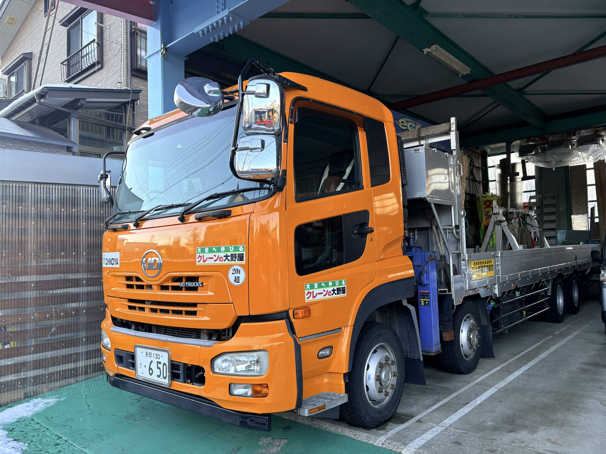

ラフテレーンクレーン・カーゴクレーン
株式会社 大野屋重機建設では、ラフテレーンクレーン・カーゴクレーンによる各種揚重作業を行っております。
建設現場での鉄骨・鉄筋の揚重、空調設備の搬入、橋梁工事など、幅広い分野で実績がございます。豊富な車両ラインナップにより、現場の条件に合わせた最適なクレーンをご手配いたします。
保有車両

13t積カーゴクレーン 1台
13t積みトラック搭載型カーゴクレーン。資材運搬と揚重を同時にこなします。
12t積カーゴクレーン 1台
12t積みトラック搭載型カーゴクレーン。現場への資材搬入に活躍します。
主な作業実績
- 建築鉄骨・鉄筋の揚重・建方
- 空調・電気設備の搬入・設置
- 橋梁・道路工事
- プラント工事
- 風力発電設備の組立・解体
- その他各種揚重作業